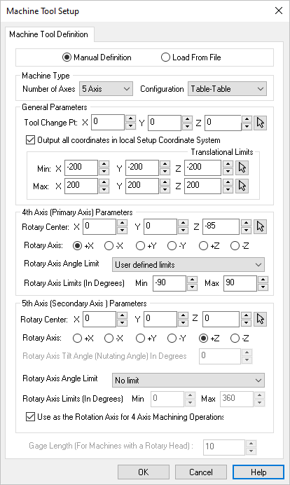
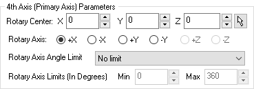
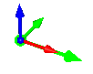
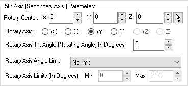
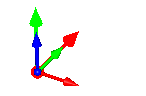
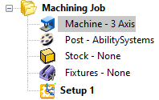

Before creating a toolpath make sure you have the Machine Tool definition set to the correct Number of Axis and the axis directions defined.
1.Select the Program tab.
|

2. From the Program tab, select Machine to display the dialog.
From the Program tab, select Machine to display the dialog.
 Dialog Box: Machine Tool Setup - Manual Definition |
3.From the Machine Tool Definition tab select Manual Definition.
4.For Machine Type, select the Number of Axis from the selection menu.
5.There are other General Parameters that you can set such as a Tool Change Point and Translational Limits.
6.Check the box to Output all coordinates in local Setup Coordinate System. This is typically check by default.
7.If Machine Type is set to 4 Axis, check the 4th Axis (Primary) Parameters section of the dialog and make sure the Rotation Center and Rotary Axis direction are set correctly. An axis indicator arrow (Green) will display on the part showing you this location and direction. You can also set the Rotary Axis Limit here.
  |
8.If Machine Type is set to 5 Axis, check the additional 5th Axis (Secondary Axis) Parameters section of the dialog and make sure the Rotary Center and Rotary Axis direction are set correctly. An axis indicator arrow (Red) will display on the part showing you this location and direction.
  |
9.If Machine Type is set to 5 Axis and the parameter to Output all coordinates in local Setup Coordinate System is NOT checked, make sure to set the value for Gage Length (For machines with a Rotary Head). This represents the distance from the head's rotary axis to the spindle face. This length value much match your machine in order for toolpath coordinates to be output correctly.
10.Pick OK to close the Machine Tool Setup dialog.
11.You will that the Machine is defined under the Machining Job.
 |